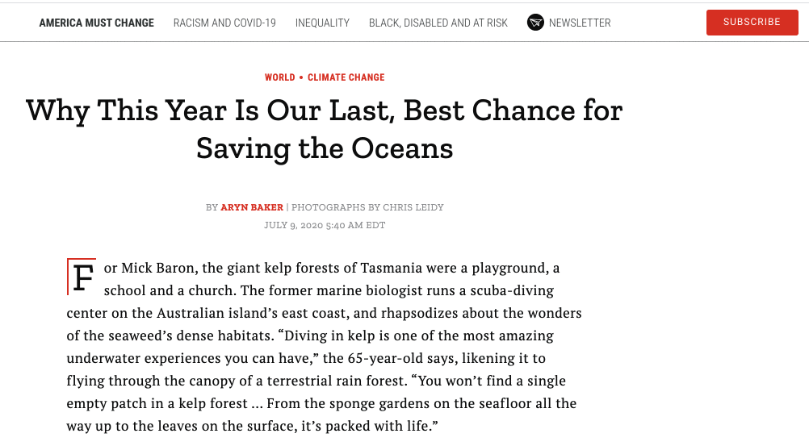
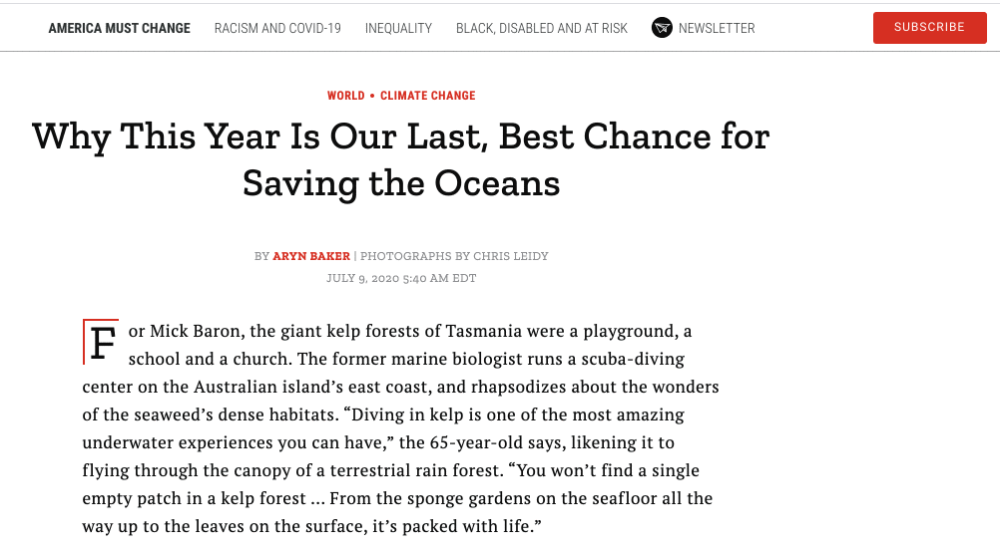

University of Pennsylvania
Bachelor of Science in Engineering
Computer and Information Science
GPA: 3.66 · Major GPA: 3.76
Computer Science: Advanced Algorithms and Data Structures,
Software Engineering and Design, Programming Languages &
Techniques, Computer and Network Security, Cryptography,
Linux/Unix Skills, Intro to Python Programming, Intro to
Computer Systems, Theory of Computation
Mathematics: Discrete Mathematics, Multivariable Calculus,
Linear Algebra, Statistics and Probability, Number Theory
Skills Acquired: Java, Python, C, OCaml, JavaScript, HTML/CSS,
Android, Linux/Unix, Node.js, Express.js, React, Django, Pandas,
Version Control (Git), MongoDB
August 2018 - May 2022
St Agnes Academy
Summa Cum Laude Graduate
GPA: 4.00
Honors & Leadership: National Merit Scholar, AP Scholar with
Disctinction, Captain of Swim and Water Polo Teams, National
Honor Society
August 2014 - May 2018
 
